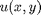
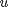
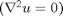
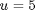
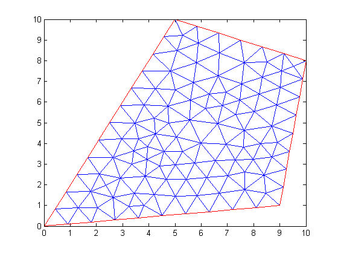
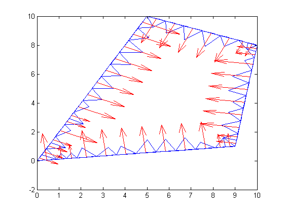
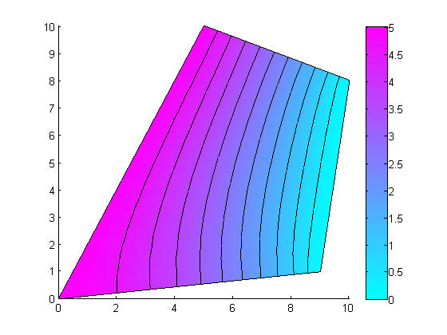
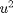

Contents
- Solve Laplace's equation on a 4-sided polygon
- Define geometry using geometryObject class
- Define boundary conditions using boundaryConditionObject class
- Define coefficients using coeffsObject class
- Solve
- Post-process : integration on boundary and area
- Post-process: Create and use  function from solution 
- Documentation of classes
- More info and other examples
Solve Laplace's equation on a 4-sided polygon
Introduction
Laplace's equation  is solved on a 4-sided polygon domain. Sides 1 and 3 have Dirichlet BC, , sides 2 and 4 have Neumann BC,
function exampleFormulation
import pdetbplus.*; % import package for accessing the geometryObject, boundaryConditionObject and coeffsObject classes
Define geometry using geometryObject class
Define geometry and mesh it.
% Start by defining points of the polygon pts{1} = pointObject(0.0,0.0); pts{2} = pointObject(5,10); pts{3} = pointObject(10,8); pts{4} = pointObject(9,1); % Specify the inside and outside regions leftRegion = 'air'; rightRegion = 'fooMaterial'; % Close polygon leaveOpen = false; % Left region is exterior leftRegionIsExterior = true; g = geometryObject.createPolygon('name','fooPolygon','points',pts,'leftRegion',leftRegion,'rightRegion',rightRegion,... 'leftRegionIsExterior',leftRegionIsExterior,'leaveOpen',leaveOpen); % Although exterior region has been set, good practice to set it explicitly g.exteriorRegion = 'air'; figure(1); g = g.initMesh('showMesh',true); % note this is an initial mesh that could be changed by adaptmesh() % Set dimension of the problem to 1 N = 1;
Define boundary conditions using boundaryConditionObject class
% Instantiate boundary condition object bc = boundaryConditionObject(g,N); % Use built in Dirichlet option bc.add('name',g.boundary{1}.name,'dirichlet',5); bc.add('name',g.boundary{3}.name,'dirichlet',0); % Specifying Neumann BC can be skipped since it is a natural BC. % However it is set below in 2 different ways for illustration. bc.add('name',g.boundary{2}.name,'neumann',0); % BC can also be specified in terms of a function for more flexibility function [hval,rval,qval,gval] = bcondNeumann(x,y,u,t) rval = []; hval = []; qval = sparse(N,N); gval = zeros(N,1); end bc.add('name',g.boundary{4}.name,'xyutFunction',@bcondNeumann);
Define coefficients using coeffsObject class
coeffs = coeffsObject(g,N); % Specify coefficients using functions. % Since we are solving a Laplace problem "a" coefficient is zero % Define "c" coefficient function cij = cCoeff(x,y,u,ux,uy,time) % receive x,y,y,ux,uy at centroids cij = [1 0; 0 1]; end function fi = fCoeff(x,y,u,ux,uy,time) % receive x,y,y,ux,uy at centroids fi = zeros(N,1); end function aij = aCoeff(x,y,u,ux,uy,time) % receive x,y,y,ux,uy at centroids aij = zeros(N,N); end % Add coefficient functions coeffs.add('region','fooMaterial','fiFunction',@fCoeff,'cijFunction',@cCoeff,'aijFunction',@aCoeff);
Solve
% Supply initial guess even though problem is linear u0 = zeros(size(g.mesh.p,2),1); [u,p,e,t] = adaptmesh(g.geometryFunction,bc.bcFunction,coeffs.cFunction,coeffs.aFunction,coeffs.fFunction,'Init',u0,'Ngen',1); % Reset mesh in g, since adaptive mesh changed mesh size g.mesh = meshObject('p',p,'e',e,'t',t);
Number of triangles: 198 Number of triangles: 238 Maximum number of refinement passes obtained.
Post-process : integration on boundary and area
% Integrate ||c grad u.n||^2 along boundary of region % Define boundary integrand. function val = integrandNeumann(xmid,ymid,nxmid,nymid,inputs) ux = inputs{1}; uy = inputs{2}; val = (ux*nxmid + uy*nymid)^2; end % Get c grad u [cdudx,cdudy] = pdecgrad(g.mesh.p,g.mesh.t,coeffs.cFunction,u); % Notice how inner region is specified as 'air' below because integration % is done 'outside' a boundary. Since there are no triangles in air and there are triangles in the interior region, we % flip the meaning of the inner and outer regions figure(2); % Integrate val1 = g.integrateOutsideBoundary('innerRegion','air','outerRegion','fooMaterial','integrand',@integrandNeumann,... 'showBoundary',true,'showBoundaryClear',false,'integrandInput',{cdudx,cdudy}); g.plot(); %overlay geometry fprintf('||grad u.n||^2 along air-material boundary = %e \n',val1); % Integrate u*sqrt(x^2+y^2) on region using geometryObject class % Define region integrand. function val = integrandSegs(xmid,ymid,inputs) umid = inputs{1}; val = umid*sqrt(xmid^2+ymid^2); % some function end % Interpolate u from mesh vertices to centroids of mesh elements utriangles = pdeintrp(g.mesh.p,g.mesh.t,u); % Integrate val2 = g.integrateOverRegion('integrand',@integrandSegs,'region','fooMaterial','integrandInput',{utriangles}); fprintf('integral of distance weighted solution = integral(sqrt(x^2+y^2)*u) over interior region = %e\n',val2); % Plot figure(3); pdeplot(g.mesh.p, g.mesh.e, g.mesh.t, 'xydata', u, 'contour', 'on');
||grad u.n||^2 along air-material boundary = 9.866139e+00 integral of distance weighted solution = integral(sqrt(x^2+y^2)*u) over interior region = 1.170931e+03 
Post-process: Create and use function from solution
Integrate  on a horizontal line (2,4) and (pt2x,4) between first and third boundaries. Height of the line is 4. Create solution as a function of (x,y)
uxy = g.createXYFunctionFromNodalSolution(u); % Create line integrand lineIntegrand = @(x) uxy(x,4).^2; % bind second coordinate to 4 % Get x value on third boundary with line, y = 4 pt2x = interp1([pts{4}.y pts{3}.y],[pts{4}.x pts{3}.x],4); % Integrate lineIntegralValue = integral(lineIntegrand,2,pt2x); fprintf('lineIntegralValue between (2,4) and (%0.3f,4) = %e\n',pt2x,lineIntegralValue);
lineIntegralValue between (2,4) and (9.429,4) = 7.046858e+01
Documentation of classes
See help for geometryObject pointObject coeffsObject boundaryConditionObject meshObject
More info and other examples
end